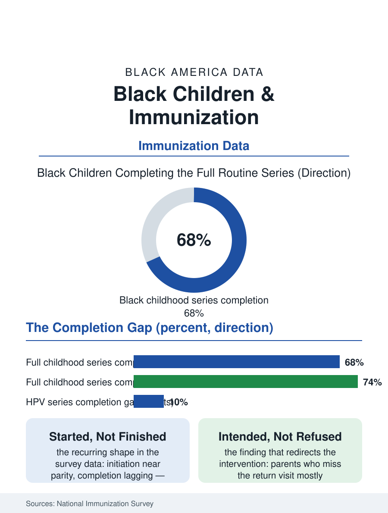

Black Public Health
Started, Not Finished: Black Children and Immunization
Black children start the vaccine series near parity and complete it behind, the return visit failing more than the parents' intentions. The immunization file.

Black children are immunized at rates close to, but persistently below, the national average across the routine childhood series, and the gaps concentrate in the series' later doses and the adolescent vaccines, with the COVID-era disruption widening the shortfalls the surveys are now measuring. The federal immunization surveys count the pattern annually. This article reads the immunization file.
The Series and the Gaps
The National Immunization Survey's childhood series, the diphtheria-tetanus-pertussis, polio, measles-mumps-rubella, Haemophilus, hepatitis B, varicella, and pneumococcal vaccines, shows Black children completing the full combined series at rates several points below the white rate, the gap concentrated in the fourth doses, the boosters that require the return visit, and in the pneumococcal and Hib series' completion. The adolescent series tells the sharper story: the meningococcal and Tdap vaccines approach parity, while the HPV vaccine series, the cancer-preventing vaccine whose uptake the public health establishment made a national priority, shows Black adolescents starting at comparable rates and completing the multi-dose series at lower rates, the completion gap being the file's recurring shape, initiation without completion. The influenza vaccine's annual cycle shows the widest pediatric gap, Black children's seasonal coverage trailing by ten points or more in the survey years, the yearly re-decision and the access requirement compounding where the routine series' infrastructure, the well-child visit file's schedule, holds more firmly. The COVID-19 vaccine's pediatric uptake reproduced the pattern at larger scale, the initial surge's racial gap narrowing as the mandates and the school-based programs spread, then stabilizing at a substantial shortfall the surveys track.
Why the Return Visit Fails
The causes file is mostly logistical, in the pattern of the trials file's findings: the vaccines themselves are free to the child through the Vaccines for Children program for the Medicaid, uninsured, and underinsured populations, so the price is not the barrier the national debate assumes, while the visit is, the well-child schedule's fragility under the hourly parent's work hours, the transportation cost, the clinic's scheduling capacity, and the provider churn that breaks the reminder system's continuity. The information environment contributes its share, the vaccine hesitancy surveys recording Black parents' concerns at elevated rates, rooted in the medical mistrust file's documented history and in the specific misinformation circuits of the social media era, but the survey literature's consistent finding is that hesitancy explains less of the completion gap than access does, and that the parents who miss the return visit mostly intended to make it, a distinction the intervention literature uses to choose reminders and access over persuasion. The school-based and pharmacy delivery experiments, the clinics in the schools the children already attend, the reminder-recall systems that text the parent in the language of the household, post the file's best completion gains, and the states that automated the reminder infrastructure at the registry level show the gaps narrowing in the surveillance data without any change in parental attitudes at all.
The Completion Agenda
The immunization file closes on the system's own diagnosis, which the surveys have made almost embarrassingly precise: the children are born into the system, the first doses land on schedule at near-parity, and the series frays at the return visits the working parent's week cannot reliably protect. The agenda that follows is the unglamorous one the completion literature endorses: reminder-recall at registry scale, school-located delivery for the adolescent series, the pharmacy's expanded role, and the clinic hours extended past the hourly worker's shift, the interventions whose effect sizes the evaluations measure in completed series rather than changed minds. The stakes are the disease file's: the measles resurgences of the recent years have found their footholds in precisely the undervaccinated pockets the completion data map, and the Black child population's share of those pockets is a function of the return-visit geography, not of any community's settled refusal. The surveys count the series each year, and the gap's persistence at a few points, narrowing in the states that automated the reminders, is the file's final measure of the work: the vaccine is free, the parents are willing, the system is almost there, and the last few points are a scheduling problem the data have already solved wherever the system chose to solve it.
More in Black Public Health
Hypertension Among Black Adults: Prevalence, Control, and Consequences
About 55 percent of Black adults have hypertension — the highest rate of any U.S. group. Prevalence, onset, control, and the stroke, heart, and kidney consequences in the data.
Diabetes Among Black Adults: Prevalence and Complications
Nearly one in five Black adults has diabetes, diagnosed or undiagnosed — and its complications fall with particular weight. The CDC data on prevalence, control, and outcomes.
Black Life Expectancy: The Gap at Birth and Its Causes
Black life expectancy at birth is about 73 years, roughly five years below the national figure — the summary measure of every health gap in this section. The CDC data.
Source: Centers for Disease Control and Prevention, National Immunization Survey-Child and Teen; immunization completion literature.